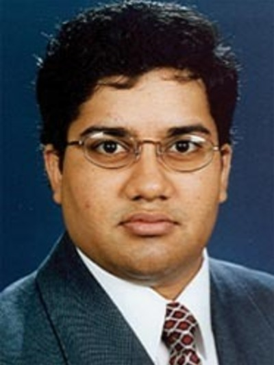

Keynote Speakers:

Srinivasan Parthasarathy (Ohio State University)

Aditya Parameswaran (UC Berkeley)
Shivakumar Vaithyanathan (Adobe)
Panelists:
- Prof. Sharad Mehrotra (Univ. of California, Irvine, USA)
- Prof. Srinivasan Parthasarathy (The Ohio State University, USA)
- Dr. Prasad Deshpande (Databricks)
- Dr. Shiv Kumar Saini (Principal Scientist, Adobe Research)